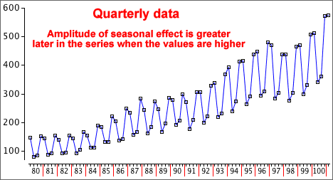
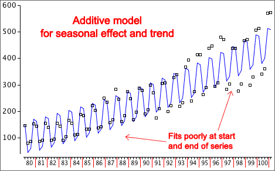
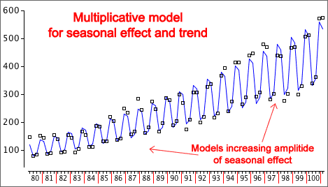

If you don't want to print now,
Additive models
We assumed earlier that the four time series components affect it additively.
Deseasonalised = Trend + Cyclical + Residual
This implies that:
The seasonal pattern has greater magnitude at the end of the following time series than at its start, so an additive model is not appropriate.

Multiplicative models
In many time series, the absolute differences in the values are of less interest and importance than the percentage changes. A multiplicative model assumes that seasonal and other effects act proportionally on the series:
Data = (Seasonal effect) × Trend × Cyclical × Residual
After taking logarithms (either natural logarithms or to base 10), the four components of the time series again act additively.
| log(Data) | = log(Seasonal effect × Trend × Cyclical × Residual) |
| = log(Seasonal effect) + log(Trend) + log(Cyclical) + log(Residual) |
To fit a multiplicative model, analyse the logarithms of the data with an additive model.
Difference between additive and multiplicative models
Additive and multiplicative models can only be easily distinguished when there is noticeable trend in the time series.


Obtaining forecasts
A multiplicative model is equivalent to an additive model for the log data.
log(Data) = Seasonal* + Trend* + Cyclical* + Residual*
This model will give forecasts of the log data.
forecast of log(Data) = (forecast Seasonal*) + (forecast Trend*) + (forecast Cyclical*)
To obtain forecasts in the original scale, an inverse transformation must be applied. With base-10 logarithms,
| forecast of Data = 10 | forecast of log(Data) |
(If natural logarithms were used, an exponential function gives a forecast in the original units. Both types of logarithms result in identical forecasts.)
Analysis of the raw data can sometimes lead you to wrong conclusions. Adjustment of the data prior to analysis may give you better insight.
Seasonally adjusting data
Data should be seasonally adjusted to remove any seasonal pattern before you try to interpret whether any particular value is unusually high or low.
Adjusting to constant dollars
A 1990 dollar was worth considerably more than a 2010 dollar, making it hard to compare prices in these two years.
Values described in dollars should be adjusted to 'constant' dollars using the consumer price index (CPI) or the price of some other 'standard' commodity. Using average income to adjust house prices to '1990 dollars',

Using per capita data
Looking at trends in 'quantity' values (e.g. a country's total alcohol consumption) is misleading over a period in which the population increases. It is more meaningful to examine quantities per person.
Always consider carefully whether a different variable would describe the data more meaningfully.
A classification of time series
Time series data arise in various different contexts.
The measurements themselves may be:
In this e-book, all of the above types of time series are analysed in the same way.